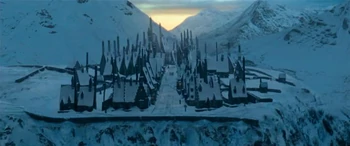

Hogsmeade
Hogsmeade Village, or simply called Hogsmeade, is Britain's only fully magical village. It was founded by Hengist of Woodcroft. From before 1714 (when the Edict of 1714 was passed), students from the third year of Hogwarts School onwards were allowed weekend trips to the village. Primarily, students frequented the High Street in the High Street and the High Street in the High Street. Primarily, students frequented High Street in the village, which contained the specialist shops and pubs named after Zonko's Joke Shop and Honeydukes. Otherwise, they kept wandering to observe the infamous Shrieking House. Hogsmeade is a quaint little village of cottages and shops, with enchanted candles hanging from the trees during the holidays. It was also close to the location of the train station used by the Hogwarts Express.
Known places
Pig's Head
It is located below the main street, past Zonko and the post office. It has an unkempt sign with a picture of a pig's head cut off and bleeding. Inside is a single room, small, dingy and dreary with an intense smell of goats. The windows barely let any light through because of the grime that has accumulated on their panes, and the place is lit by candles placed on the tables. The floor is caked with the grime of many, many years; the barkeep is Albus Dumbledore's brother, Aberforth Dumbledore, a grumpy-looking old man with a beard and a shock of long grey hair, tall and thin. It is not forbidden in Hogwarts rules to go there, but Flitwick recommends that you bring your own glasses; Hagrid got the dragon's egg here in 1991, and admits that there are a lot of strange people in the place. It could be the site of the goblin revolt of 1612. During Voldemort's second reign, Death Eaters smuggle potions into the Hog's Head. A secret passageway is hidden behind Ariana Dumbledore's portrait on the first floor of the tavern and connects to the multi-purpose room, or Room of Requirement, at Hogwarts. It was discovered in 1998 by Neville Longbottom.
Dervish and Banges
Dervish and Banges is a shop at the end of the main street that sells and repairs magic instruments such as snitches.
Train station
This station is where the Hogwarts Express stops every September 1st from London's King's Cross station. Students then make their way to the castle in boats across the lake (first years) or in carriages pulled by thestrals.
Honeydukes
Honeydukes is a candy shop owned by a married couple who live above the shop; one of the secret tunnels on the Marauder's Map connects Hogwarts Castle to the basement of Honeydukes. The shop stocks a wide variety of sweets, including chocolate frogs, Bertie Bott dagrees in all flavours, sugar plums and super-fluffy chewing gum, and they also make their own chocolate.
The House of Feathers
The House of Feathers is located on the main street, with a shop window full of pheasant feathers. In the fifth book, Hermione Granger enters the shop and buys a black and gold feather, paying fifteen Sickles and two Knuts for it.
House of Screams
The House of Screams is considered the most haunted house in Britain. It is named after the horrifying screams and sounds that came from inside twenty years ago. The house fell silent years ago, but its reputation remains. The windows are completely closed, as are the doors. The ghosts of Hogwarts avoid the place, as they say that some very beastly ghosts "live" there. Fred and George have tried to enter in vain. It is separate and higher than the rest of the village, and has a damp, shady, overgrown garden. It is entered through a gap in the roots of the Box Willow. It has a piano, and the whole house is full of dust. It's not actually haunted, it was built so that the werewolf Remus Lupin could enter so that he wouldn't bite anyone on full moon nights during his time as a student at Hogwarts. While on the student body, Lupin used the Shrieking House alone and, from his fifth year onwards, with the animagi James Potter (a deer), Peter Pettigrew (a rat) and Sirius Black (a black dog). There Lord Voldemort killed Severus Snape thinking that the Elder Wand belonged to Snape.
The Three Brooms
The Three Broomsticks, owned by the pretty Lady Rosmerta, this tavern is famous for its butterbeer, but also serves other drinks such as wallflower, hot spiced mead, cherry syrup and soda on the rocks, and gooseberry rum. It's a hot place, full of people, bustle and smoke. There are many tables, of different sizes, and a mirror. It has several sections, and minors are not allowed to enter the adult-only section. Shrunken heads forbid minors to enter in the third movie. It was the place where Harry first learned that Sirus Black was his godfather and that he had betrayed his parents, although it was later revealed that this was not true.
Madame Tudipié's tea shop
Madame Tudipié's tea shop is a tea room in a side street; it is small and warm, full of little round tables and decorated with fringes and bows. On Valentine's Day it is decorated with golden cherubs and is often attended by engaged couples. The owner and waitress, Madame Pudipié, is a sturdy witch with a shiny black bow tie. In the English version, the place is not called Tudipié but Puddifoot.
Post Office
At least three hundred owls, ranging from very large grey owls to owlets, are waiting to send messages. They are colour-coded, depending on how fast the letter you want to send needs to be sent.
Zonko joke shop
It is one of the favourite shops for Hogwarts students. You can buy stink bombs, hippogriff sweets, frog egg soap, a cup that bites your nose. During Voldemort's second Voldemort boom the shop was kept closed. The Weasley twins thought of buying it as a branch of Weasley's Sorceries, but dismissed the idea because Hogwarts students were not allowed to visit Hogsmeade.
- Stink bombs
- Hypotos sweets
- Whistling worms
- Long, deadly-looking metal instrument that the twins threaten to use against Zacharias Smith
- Frog egg soap
- Burping powder
- Nose-biting cups
Fashion Long Shots
Clothing shop that advertises during the Quidditch World Cup, with branches in London and Paris. The trio buys the tackiest (vulgar) socks for Dobby here.